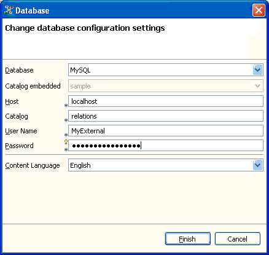

The Relations application stores the entered information in an embedded database. You can create new embedded databases and delete them afterwards. Furthermore, you can use an external RDBMS (relational database management system) and connect to it.
The RDMBS used by default is an embedded Derby database. The application creates and uses a database catalog named "default_db" (see the application's status line). You can create new storage place in embedded or external databases, see Wizards to create items and databases.
You can delete any embedded database except of the
"default_db". To delete an embedded database, make it the current
database and select the menu entry Data
> Delete current database. This will delete the
current database and switch to "default_db".
Note: You can't delete storage place in an external database using this application.
You can connect to an already existing database, either
embedded or external, using the dialog displayed after clicking Ctrl-O
(Data > Open
Database).

Open another databaseYou first have to select the RDBMS you want to connect to. The Relations application comes with an embedded Derby database. If you have installed a MySQL database, you can use this RDBMS to store the item information as well.
If you chose the embedded database, you only have to select the catalog (e.g. database) available.
Having chosen an external database, you have to provide the information needed to connect to this database. You have to specify where the RDBMS is installed (the host), the name of the database (i.e. the catalog) that is set up to store the item information within this RDBMS, the user name and password that has the right to access the information stored in this catalog. Be aware that you can connect to an external database catalog only if this catalog has the appropriate database schema (see Database schema).
The last information needed is the language of the content you store in the database. This information is needed to select the appropriate index for full text search. Available content languages are English and German.
Note: It is possible to extend the application by providing additional database configurations for that you can connect to another external RDBMS. This can be done by providing a plug-in implementing the org.elbe.relations.configuration extension point.